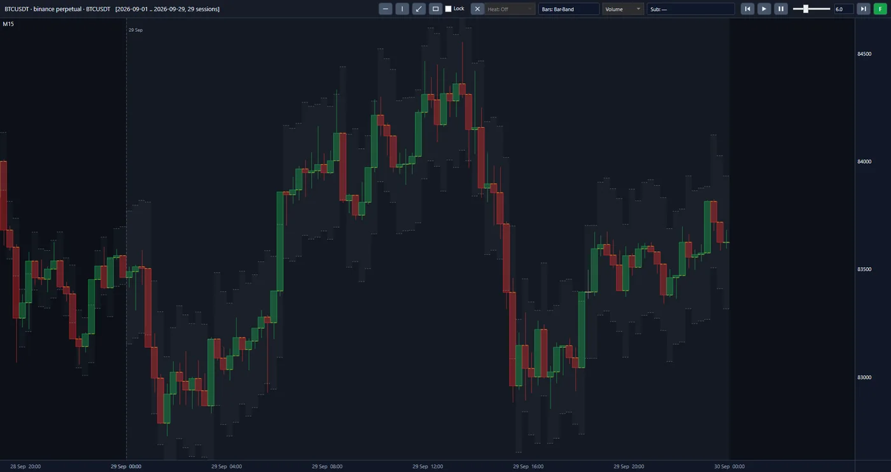
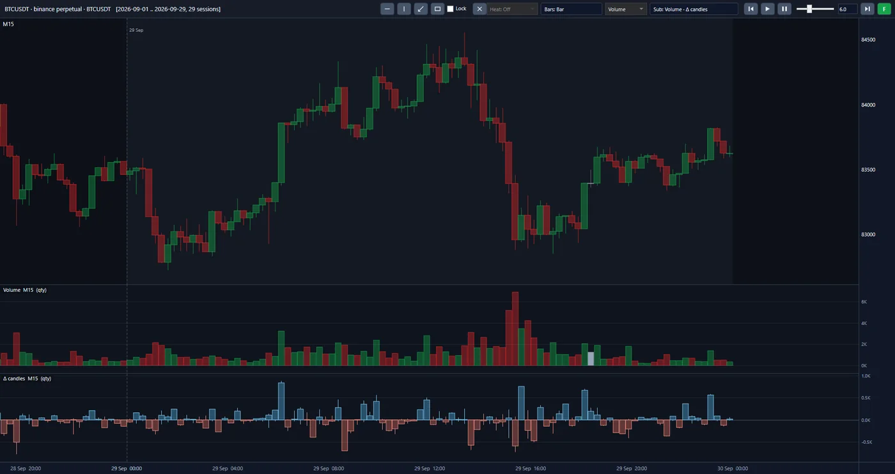
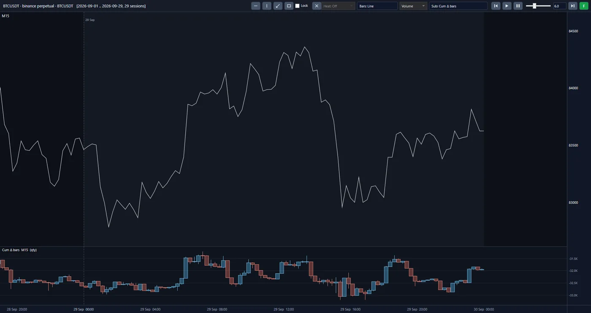

Einführung
Der Kryptomarkt schließt nie, und er ist auch nicht an einem Ort. Jede Kryptowährung wird gleichzeitig an Dutzenden Börsen gehandelt, und an jeder von ihnen muss immer jemand bereit sein, zu kaufen und zu verkaufen. Diese stets präsente Gegenpartei ist der Market Maker: Er kauft etwas billiger, verkauft etwas teurer und muss nicht wissen, in welche Richtung sich der Preis bewegen wird. Sein Risiko ist, kurz vor einer großen Bewegung auf der falschen Seite gehandelt zu haben; und in einem Markt, der sich über mehrere Börsen verteilt, beginnt diese Bewegung oft anderswo.
Vor dem Schreiben des Algorithmus haben wir diesen gesamten Markt aufgezeichnet, und wir zeichnen ihn weiter auf.
Das Projekt Crypto Market Maker trägt den Markt von 22 stark gehandelten Kryptowährungen an 16 globalen Börsen zusammen, auf der Ebene jedes einzelnen Trades und jeder einzelnen Order. Der Umfang der Arbeit ist ein volles Jahr für jede Kryptowährung, das heißt 60 Terabyte Rohdaten. Das Ziel ist ein automatisierter Market-Making-Desk, der Kapital mit einem auf genau dieser Historie trainierten und getesteten Algorithmus steuert.
Einblick in die Plattform
Das sind echte Bildschirmaufnahmen aus der Plattform des Projekts, keine Mock-ups. Alle drei Ansichten zeigen einen Markt: den BTCUSDT-Perpetual-Kontrakt auf Binance, 29 Tage des September 2026, mit 15-Minuten-Kerzen, gebildet aus den archivierten Trades. Klicken Sie auf das Bild, um es zu vergrößern.



Fünfzehn-Minuten-Kerzen in der Bar-Band-Ansicht: jede Kerze mit dem schattierten Band um sie herum.
Dieselben Kerzen, und darunter zwei Panels: das Volumen jeder Kerze und die Delta-Kerzen (Δ candles).
Der Preis als Linie, und darunter das kumulative Delta, als Kerzen gezeichnet (Cum Δ bars).
Ansatz
Zuerst zeichnen wir den Markt vollständig und korrekt auf, dann bilden wir ihn nach, und wir trainieren und messen den Algorithmus in einer Nachbildung desselben Marktes. Die Arbeit verläuft in drei Stufen:
-
Vom Markt zum Archiv
Eine automatisierte Pipeline empfängt, komprimiert, verifiziert und speichert Tag für Tag die Spot- und Futures-Daten aller 16 Börsen. Das Ergebnis ist ein einheitliches Archiv, in dem jede Datei an der Quelle gemessen wurde. Diese Stufe ist gebaut und läuft rund um die Uhr.
-
Vom Archiv zum vollständigen Bild des Marktes
Unsere Plattform bildet jeden Tag des Marktes genau so nach, wie er abgelaufen ist, und zeigt ihn auf einem Chart. Ihr Trades-Teil ist gebaut und getestet. Die Nachbildung des Orderbuchs, der Liste der wartenden Orders in jedem Moment, wird der nächste Schritt sein.
-
Vom Bild des Marktes zum Algorithmus und zur getesteten Ausführung
Mit maschinellem Lernen und statistischer Analyse wird der Market-Making-Algorithmus aus genau diesen Daten lernen, wo eine Order zu platzieren ist, welcher Trade zu meiden ist und wann es gilt, zur Seite zu treten. Er wird in einem Ausführungssimulator getestet werden, der das Verhalten der Börse selbst nachbildet. Der Maßstab wird das finanzielle Nettoergebnis nach allen Kosten sein.
Neben dem Market Making der kurzfristige Handel: Ein zweiter Algorithmus, der kurze Preisbewegungen mitgeht, wird auf derselben Infrastruktur und demselben Simulator gebaut werden. Beide stützen sich auf ein und dasselbe Wissen: zu erkennen, welche Bewegung sich fortsetzen wird. Der Market Maker nutzt es, um zur Seite zu treten, und der kurzfristige Trader nutzt es, um einzusteigen.
Was heraussticht
-
Eine Pipeline, die ohne Aufsicht arbeitet.
Das Zusammentragen von Dutzenden Terabyte aus 16 Quellen bleibt beim ersten nächtlichen Ausfall stehen, wenn es von menschlicher Betreuung abhängt. Unsere Pipeline erholt sich von selbst von Netzwerkausfällen, Fehlern der Quelle und einer vollen Festplatte und legt nur das beiseite, was sich nicht von selbst behebt. Dieses Verhalten wurde gegen mehr als 50 Ausfallszenarien getestet.
-
Daten, deren Korrektheit nachgewiesen ist.
Ein Algorithmus, der auf unvollständigen Daten trainiert wurde, lernt die Fehler der Daten statt der Muster des Marktes. Jede unserer Dateien wird vor dem Speichern anhand von drei unabhängigen Messungen mit der Quelle verglichen; in einer einmonatigen Stichprobe wurden 376 Millionen Trades aus 126 Märkten nachgebildet und zeigten keine Abweichung von der Quelle. Wo die Quelle selbst eine Lücke hat, wird diese namentlich festgehalten und nachverfolgt und bleibt nicht verborgen.
-
Weniger als die halbe Größe, ohne eine Ziffer zu verlieren.
Dutzende Terabyte aufzubewahren und zu bewegen, verursacht laufende Kosten. Unser Speicherformat hält dieselben Daten in weniger als der Hälfte der komprimierten Größe der Quelle, und die Originaldatei lässt sich daraus Byte für Byte zurückgewinnen. Die Speicherkosten und die Übertragungszeit sinken im selben Verhältnis.
-
Das Bild des gesamten Marktes, nicht einer Börse und nicht eines Coins.
Der Preis entsteht nicht an einer einzigen Börse, und ein Market Maker, der nur seine eigene Börse sieht, versteht eine Bewegung erst, wenn sie ihn bereits erreicht hat. Wir halten alle 16 Börsen nebeneinander, in einem Format und auf einer Uhr. Der Algorithmus kann aus der Beziehung zwischen den Märkten lernen, nicht nur aus einem einzigen.
-
Eine Nachbildung, die die Zukunft nicht kennt.
Viele Tests nutzen unbeabsichtigt Informationen, die in jenem Moment noch nicht eingetroffen waren. Für jeden Trade sind zwei Zeiten festgehalten: der Moment, in dem er an der Börse stattfand, und der Moment, in dem die Nachricht davon eintraf. In jedem Moment zeigt die Plattform nur, was an jenem Tag zu sehen war, und ihre Ausgabe ist mit jeder Anzahl von Prozessoren dieselbe.
-
Eine Simulation, deren Ergebnis auch in der Ausführung Bestand hat.
Viele Strategien sind auf dem Papier profitabel und in der Praxis nicht, weil ihr Test annimmt, dass eine Order sofort zum angezeigten Preis ausgeführt wird. In unserem Simulator wird eine Order die Börse mit Verzögerung erreichen, in der Warteschlange warten, bis sie an der Reihe ist, und teilweise ausgeführt werden oder am Ende der Warteschlange bleiben. Der Algorithmus wird über eine Bandbreite von Geschwindigkeiten und Gebühren getestet werden, damit vor jeder finanziellen Verpflichtung klar ist, unter welchen Bedingungen das Vorhaben gerechtfertigt ist.
Der weitere Weg
-
Erledigt
Die automatisierte Erfassungs-Pipeline, das Speicherformat, das Panel für den Daten-Download und der Trades-Teil der Plattform sind gebaut und auf realen Daten getestet.
-
Aktuell
Heute nimmt sich die Erfassungs-Pipeline die Kryptowährungen eine nach der anderen vor, und wir bauen die nächsten Teile der Plattform.
-
Als Nächstes
Danach folgen die Nachbildung des Orderbuchs, der Ausführungssimulator sowie Entwicklung und Test des Market-Making-Algorithmus und anschließend des Algorithmus für kurzfristigen Handel.
-
Letzter Schritt
Der letzte Schritt ist die Anbindung an Live-Daten, eine Probephase mit begrenztem Kapital und Market Making mit echtem Kapital auf einem Server neben der Engine der Börse.
Technologie
Die Erfassungs-Pipeline, das Speicherformat und der Kern der Plattform sind in Rust geschrieben, der Chart in C#. Die Verarbeitung läuft parallel: Die 376 Millionen Trades eines Monats werden in unter drei Minuten aufgebaut und einer Selbstprüfung unterzogen. Keine Version wird freigegeben, außer nach einem vollständigen, fehlerfreien Durchlauf von Anfang bis Ende.